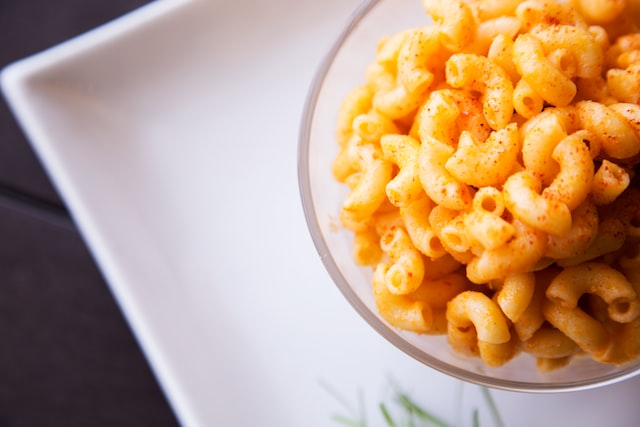

Mac & Cheese Recipe

Description:
Cook a delicious Mac & Cheese with this recipe!
Ingredients
- 8 ounces elbow pasta
- 4 tablespoons unsalted butter
- 1/4 cup all-purpose flour
- 2 cups milk
- 1/2 teaspoon salt
- 1/4 teaspoon black pepper
- 2 cups shredded cheddar cheese
Step to make
- Boil a pot of salted water.
- Add macaroni noodles to boiling water and cook for 8-10 minutes, stirring occasionally.
- Drain noodles and return them to the pot.
- Add butter and stir until melted.
- Add milk and cheese to the pot and stir until cheese is melted and mixture is creamy.
- Season with salt and pepper to taste.
- Serve hot and enjoy!